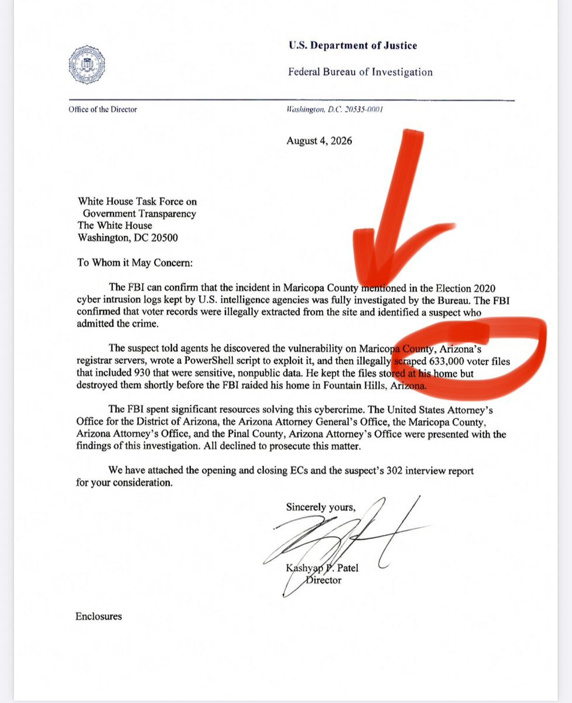
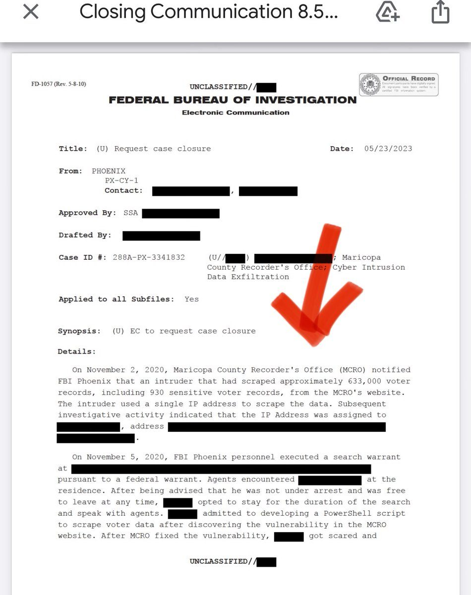
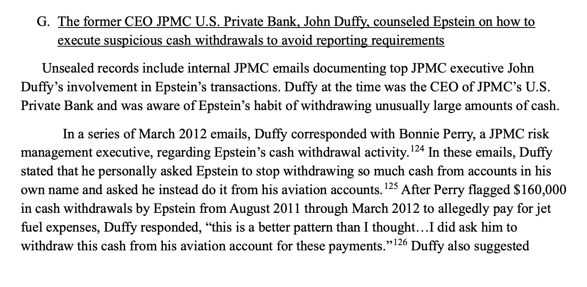
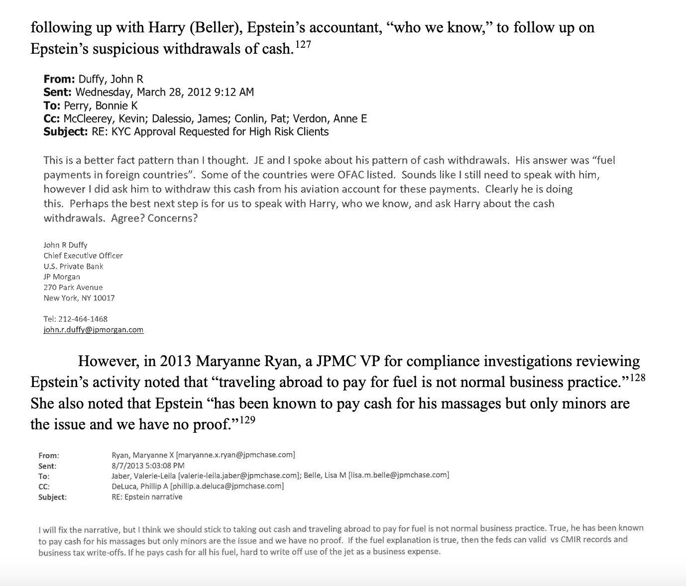
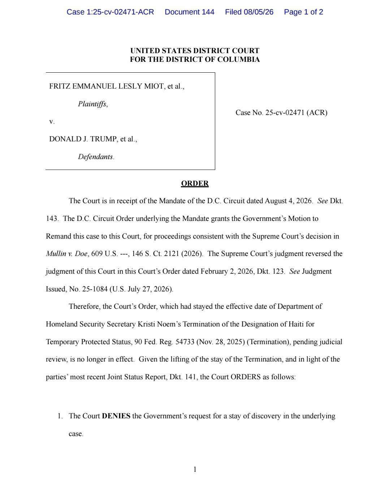
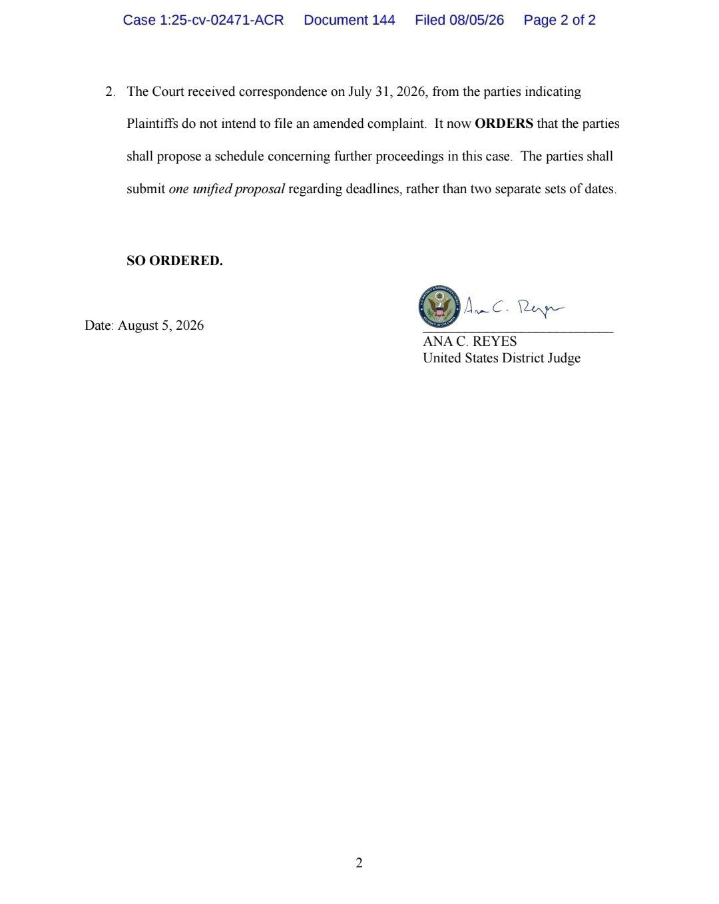
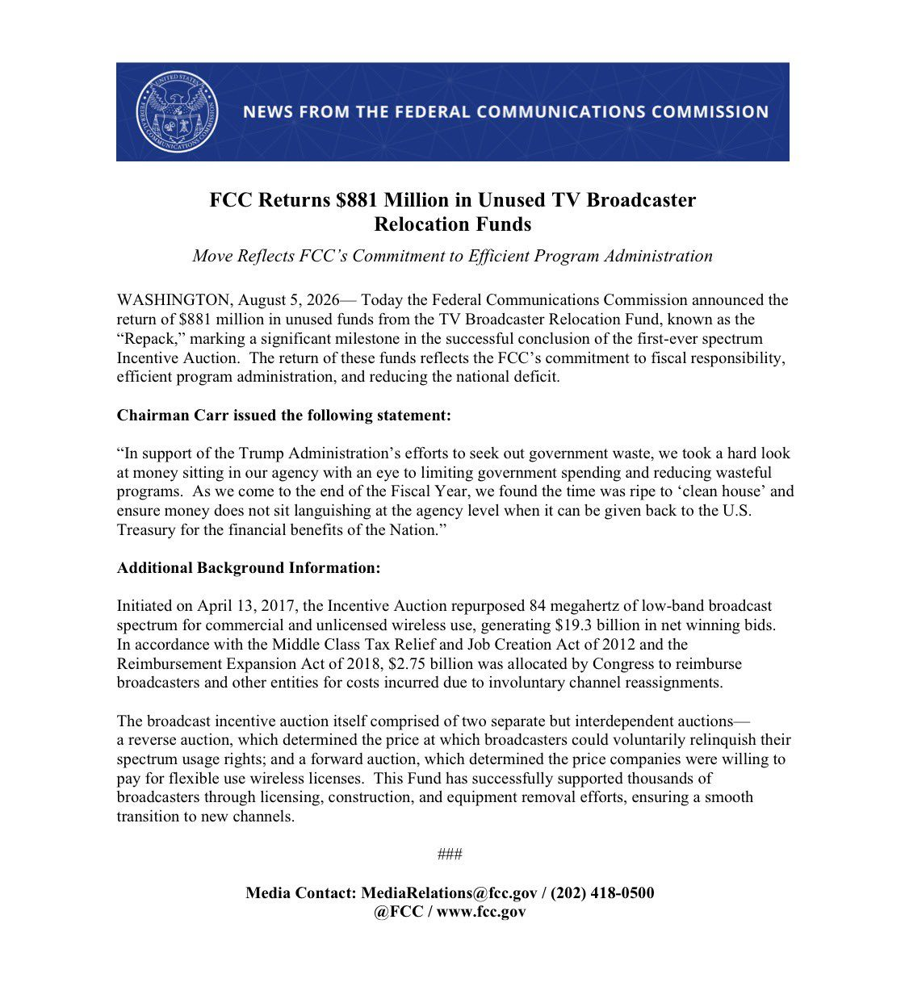
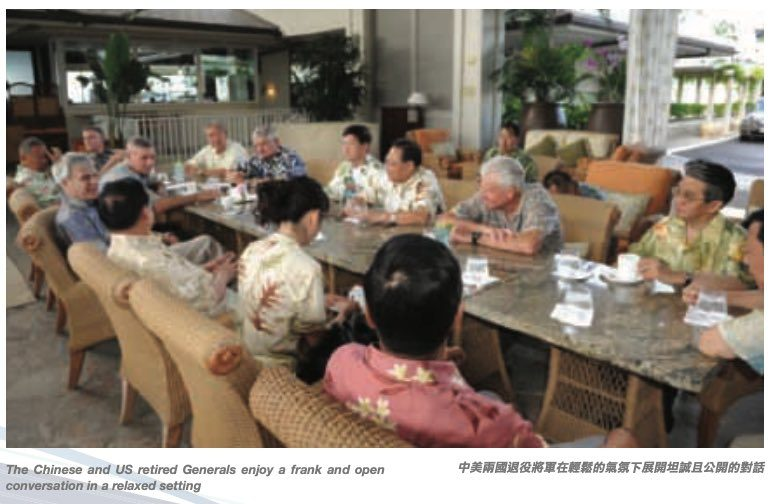

Newly declassified memos released this week show that the FBI opened a criminal investigation aimed squarely at Donald Trump in May 2017 — code-named "Oxferd Comma" — even though the Bureau's own evidence at the time showed no collusion with the Kremlin. The White House Government Transparency Task Force posted the documents for public download, and investigative reporter John Solomon says they point to a possible "criminal conspiracy to violate President Trump's civil liberties." According to the files, the probe rested on the theory that Trump acted as a Russian agent when he fired James Comey — a theory built atop the already-discredited Steele dossier. Then-Deputy Attorney General Rod Rosenstein, who knew Comey had been fired for a DOJ-policy breach in the Clinton matter, allowed the case forward and authorized Robert Mueller's appointment. "There must be a reckoning," Solomon's allies wrote. The disclosure reframes the entire Russiagate era as an internal-security question rather than a foreign one.
Declassified records challenge the oft-repeated claim that 2020 was the "most secure in American history." FBI records confirm that 633,000 voter files were illegally exfiltrated from a Maricopa County site — including roughly 930 records of sensitive, non-public data — and that the Bureau identified a suspect who admitted to the crime.


The Homeland Security committee voted 8–5 to refer Dr. Anthony Fauci for criminal contempt of Congress; a Senate panel has also obtained his iPhone, potentially unlocking more pandemic-era records.
A report finds up to 9.2 million people — 46% of Medicaid expansion enrollees — likely didn't qualify in 2024, an estimated $33 billion in taxpayer cost.
▶ Watch on XThe Vice President says the administration has already uncovered and blocked billions in fraudulent spending, and calls on Congress to help 'defeat the fraud industrial complex.'
A new Senate report says a JPMorgan private-bank CEO told Epstein to withdraw his suspicious cash through an aviation account rather than his personal ones.


Jonathan Turley: the Biden team fought for years to bury the ghostwriter tapes from the Hur investigation — and now we know why, having given Hur a 'virtual confession.'
Republican candidate Byron Donalds faces a credible felony accusation, amid claims of a history of assault, fraud and drug dealing.
Circle has confirmed September 16 as the public mainnet launch date for Arc, its new settlement network — with BlackRock, the DTCC, Visa, Mastercard and eight other institutions signed on as founding validators, and USDC as the network's native gas asset.
SWIFT announces a step forward in international consumer money transfers, with Bank of America and JPMorgan among the first to go live in the US.
A new Chainlink-powered Tokenized Securities Framework connects Hong Kong's regulated finance to digital-asset rails, with Cyberport, Apex Group and licensed brokers taking part.
SEC Commissioner Hester Peirce says crypto regulatory reform will move forward even if the CLARITY Act fails, with room under existing law to build a digital-asset framework.
Russian President Vladimir Putin has officially signed a law regulating cryptocurrency.
An Evernorth thread argues XRP is better understood by what it does — moving value — than by its price.
“Where ICE goes, rents go down.”— Treasury Secretary Scott Bessent · The Border Desk
Treasury Secretary Scott Bessent drew a straight line from immigration enforcement to the cost of living: "People don't want to admit it: where ICE goes, rents go down."
▶ Watch on XCirculating images and video from Dearborn, Michigan — voters at the polls and a large street procession — became a flashpoint in the demographic-change debate.
A federal judge lifted an order blocking the administration from ending Haiti's Temporary Protected Status, letting it move forward while the lawsuit proceeds.


The administration will require some prospective immigrants to post a bond of up to $250,000 to obtain a US visa, to ensure they can support themselves.
Per the Center for Immigration Studies, 2025 student visas fell 62% for Indian nationals and 34% for Chinese nationals — a drop echoed in reporting that both groups are receiving dramatically fewer visas.
President Trump announced that the House has passed a bill making Daylight Saving Time permanent, sending the Sunshine Protection Act to the Senate for final approval. "People are sick and tired of having to change their clocks twice a year," he wrote.
The FCC announced the return of $881 million in unused funds to the US Treasury, left over from the 2017 broadcast incentive auction.

President Trump announced that the US will soon pass what he calls 'The Great Healthcare Plan.'
Sixteen Trump-endorsed candidates won their primaries in a single night, a fresh show of the endorsement's pull.
New Mexico will let aspiring lawyers bypass the bar exam by completing 675 hours of supervised legal work.
In a Truth Social broadside, Trump mocked Michael Moore, jabbed at 'Communist' Mamdani, and declared a 'Golden Age of America.'
Federal aviation officials are reviewing an air-traffic safety incident involving a military helicopter carrying President Trump.
Scott Bessent mocked Fed reporters as 'stenographers posing as journalists,' reduced to backroom gossip in the Warsh era.
Iowa Central Community College becomes the first approved Workforce Pell program in the nation.
Top American generals, a new report alleges, formed a secret backchannel with a CCP military-intelligence front that urged them to "advocate positions" favorable to China.

"If they back out again, they're going to get hit really hard," the President said of Iran, adding that the Strait "is going to be open very soon — or they're gonna hit very hard."
▶ Watch on XTrump called a Washington Post report on Pete Hegseth 'treasonous,' praising the operation against Venezuela's Maduro and the campaign to deny Iran a nuclear weapon.
Elon Musk says Terafab Texas "will be the largest and most valuable building on Earth by far" — a colossal AI-compute plant to be built in Grimes County, with SpaceX and Tesla investing $16.8 billion in the initial buildout.
▶ Watch on XTrump says his administration has narrowed the Endangered Species Act to its 'intended' scope, freeing oil, gas, timber and homebuilding from what he called regulatory overreach.
A startup called Conduit says its AI decoded ~45% of a first-time stranger's meaning from brain signals alone — no implant — after collecting 10,000 hours of recordings.
Per Axios, Trump's AI framework would require advanced closed models to undergo a 30-day government safety review while exempting open models.
President Trump signed a sweeping executive order banning "birth tourism." As Stephen Miller put it, "no one in the world is any more allowed to obtain a visa for this fraudulent purpose" — casting the practice as "by definition a fraud on the American system."
▶ Watch on XAfter Trump v. Barbara, the President signed two EOs identifying categories of children of aliens he says are not entitled to birthright citizenship, calling the Supreme Court's ruling 'a very unfortunate decision.'
▶ Watch on XSen. Mitch McConnell was discharged from rehab and will continue physical therapy from home; his return to the Senate isn't imminent.
Top Biden-administration officials now express regret over their failure to rein in Netanyahu, The New Yorker reports.
Israel detonated 700 tons of explosives beneath Beaufort Castle in South Lebanon — a 900-year-old Crusader fortress UNESCO had just listed as endangered heritage.
▶ Watch on XTucker Carlson teased a coming broadcast: 'MAGA was betrayed. We all were. It's time for a new path forward.'
A cryptic dispatch that slipped the folders: 'Everything is catastrophically ruined and it's illegal to talk about the only solution.'